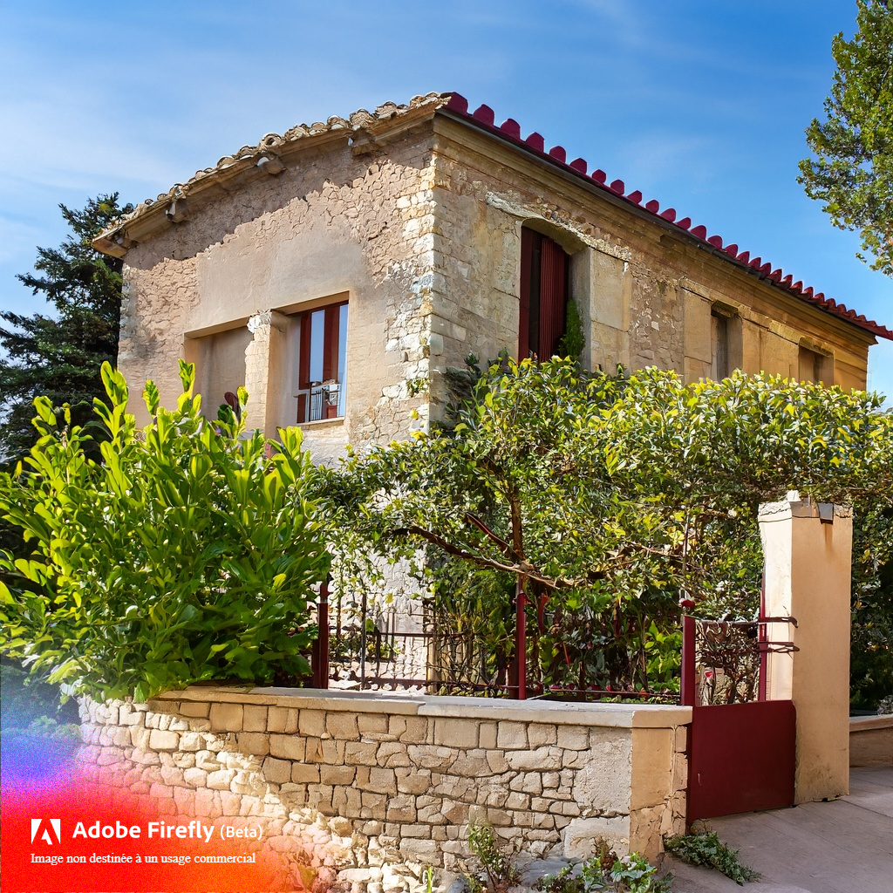

Bienvenue à l'Hôtel Provençal Charme, une oasis pittoresque nichée au cœur de la magnifique région de Provence. Cet établissement enchanteur vous invite à vous plonger dans l'essence même de la Provence, avec son charme rustique, ses paysages à couper le souffle et son ambiance chaleureuse.
L'Hôtel Provençal Charme se compose de cinq chambres exquises, chacune soigneusement aménagée pour offrir une expérience inoubliable à nos précieux hôtes. Chaque chambre est un reflet unique de la culture locale, mêlant subtilement le style provençal traditionnel à des touches de modernité raffinée. Chaque matin, vous vous réveillerez dans une douce harmonie avec les bruits de la nature, prêt à savourer un délicieux petit-déjeuner préparé avec amour par notre équipe. Vous pourrez déguster des spécialités locales, des viennoiseries fraîchement cuites, des fruits juteux et des confitures artisanales, le tout servi dans notre charmant jardin fleuri. En journée, détendez-vous au bord de notre piscine scintillante, offrant une vue sur les champs de lavande. Vous pourrez également explorer les joyaux cachés de la Provence grâce aux conseils avisés de notre personnel attentionné, qui se fera un plaisir de vous guider vers les trésors locaux. Le soir venu, rendez-vous dans notre élégant salon, où vous pourrez déguster des vins fins de la région, accompagnés de délicieuses tapenades et fromages provençaux. À l'Hôtel Provençal Charme, notre objectif est de vous offrir une expérience de séjour inoubliable, imprégnée de l'esprit authentique de la Provence. Que vous souhaitiez explorer les villages pittoresques environnants, vous détendre dans notre havre de paix ou vous adonner à une délicieuse cuisine locale, nous sommes ravis de vous accueillir et de vous offrir un séjour ressourçant au cœur de cette région enchanteresse.
Vous pouvez trouver ci-joint nos chambres